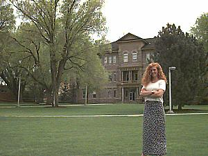

Jacob Spori Building |
|
| Built in 1903, the Jacob Spori Building is the oldest structure on campus. This building is the home of the Art and Communications departments. Also located in the Spori is KRIC, a public FM radio station. The building is named after Jacob Spori, who was the first principal of the Bannock Stake Academy, which later became Ricks College. |  |